| 任务 | 场景数据 | 相机数据 | 输入 | 输出 |
|---|
| Pose Estimation | 已知 | 测得 | 相机视野内各特征点在空间中的位置 | 相机位姿 |
| Triangulation | 测得 | 已知 | 双目相机位姿和相机视野内特征点在图片上的位置 | 各特征点在空间中的位置 |
| Epipolar Geometry | 部分已知 | 测得 | 双目相机视野内特征点在图片上的位置 | 相机位姿和各特征点在空间中的位置 |
| Reconstruction | 测得 | 测得 | 相机视野内2D图片 | 相机视野内各点在空间中的位置 |
三角定位 Triangulation
Triangulation解决的是从两张图片中计算对应点的三维坐标的问题。
这个问题的假设是：
- 两张图片对应的相机内参和外参都是已知的
- 相机中对应点关系是已知的并且正确的
这样我们就可以从这两张图片中计算出指向该点方向的两条光线，进而求其交点就得这个点对应的三维坐标
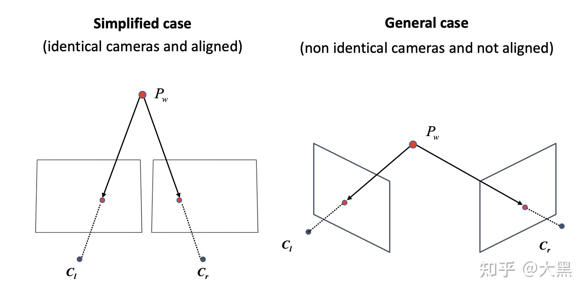
理想情况的三角定位 triangulation in simplified case
我们首先研究简化的情况，这个情况的假设就是两个相机的内参矩阵是 完全一样 的，而且两个相机 在x方向是完全对齐的。
这样我们就可以有如下的模型。
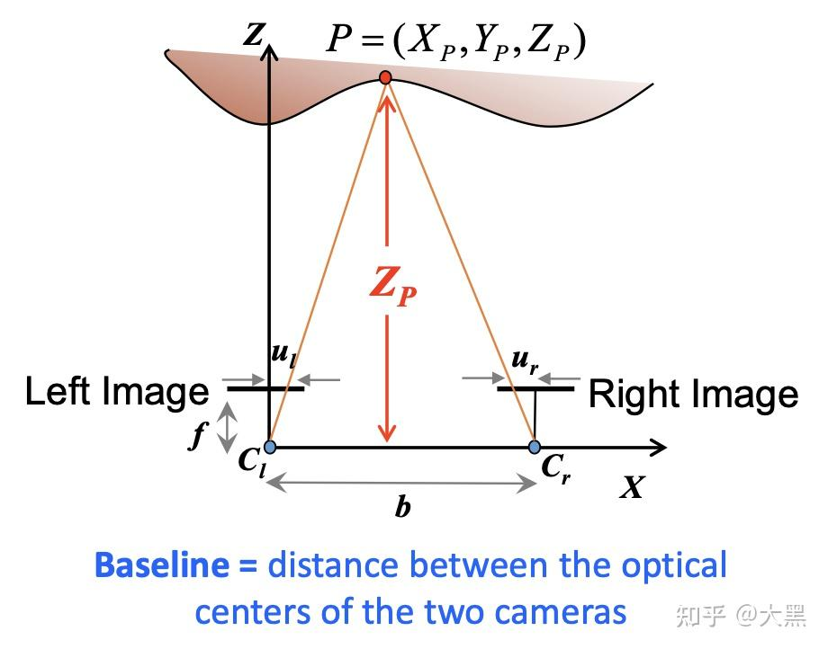
其中b被称为baseline，代表的是两个相机的光心对应的距离。图中分别以ClP和CrP为斜边可见左右两个直角三角形，其直角边可以写出如下的关系式：
ZPfZPf=XPul=b−XP−ur(left image)(right image)
左图公式写为：
Xp=fulZP
带入右图公式：
ZPf=b−fulZP−ur
解得：
ZP=ul−urbf
进一步解得：
XP=ul−urbul
而已知了ZP，YP也就好解了：
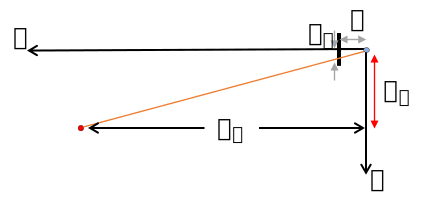
很显然左右两图中看目标点在y轴上的位置应该是一样的，即vl=vr，这里以vl为准：
YP=fvlZP
我们管 ul−ur 叫做“disparity”。其最大值就是图像本身的宽度，所以三角测量法存在一个最近距离，比最近距离还近的点无法同时出现在左右两图中所以没法三角测量。而对于无穷远的点，disparity=0。
误差？
这里我们又注意到一个问题，disparity本身是由像素点估算出来的，像素有大小是离散的，势必会带来一些误差。我们用量化的方法研究一下 baseline, disparity, 还有点的距离Z对误差的影响 。
ZP 关于D是一个非线性函数，我们一般使用函数的一阶泰勒展开来估算函数自变量不确定性带来的因变量的不确定性
ΔZP=∣dDdZp∣ΔD=∣−D2bf∣ΔD
如果我们将的表达式带入的话，可以得到
ΔZP=∣−bfZP2∣ΔD
所以我们可以得出一下几个结论：
- 对于同一个3D点，disparity越大，误差越小
- 对于固定位置关系的两张图片，3D点离得越近误差越小
我们同时还可以总结一下baseline对他们的影响：
- b越大，triangulate的误差越小
- b越大，最近可测量距离变大
那么我们就知道怎样来提高双目相机系统的精度了：
- 增大baseline
- 增大焦距
- 尽量测量近距离的点
带误差的三角定位 triangulation in general case
理想情况的三角定位很好，但是在现实生活中，由于生产和装配误差，再好的双目相机，两个相机之间也不可能是完全对齐的，求出来的光线也不一定能精准相交。于是，我们需要在相没对齐光线也不能相交的情况下求解点的坐标：
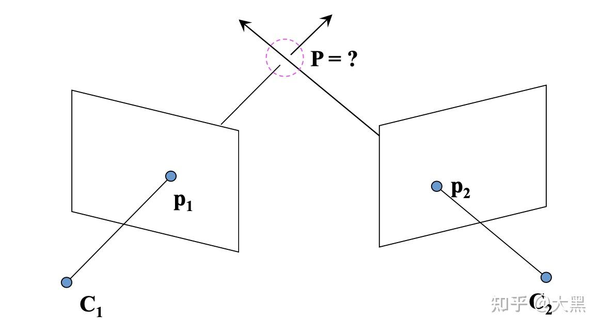
此时三角定位问题描述为：
- 已知场景中的某个点在左侧和右侧相机照片上的位置分别为(x,x′)
- 已知相机左右侧相机参数分别为P,P′
- 求该点在场景中的位置X
由于误差的存在，位置X不能精确求解，即x=PX和x′=P′X不能同时满足。
于是，三角定位问题就成为了一个最优化问题，即：
Xmin∣x−PX∣+∣x−P′X∣
回忆一下之前相机参数与坐标系变换里讲的公式：
zp⎣⎢⎡uv1⎦⎥⎤=P⋅X=⎣⎢⎡p11p21p31p12p22p32p13p23p33p14p24p34⎦⎥⎤⋅⎣⎢⎢⎢⎡xwywzw1⎦⎥⎥⎥⎤
可拆为：
⎩⎪⎪⎪⎪⎪⎪⎪⎪⎨⎪⎪⎪⎪⎪⎪⎪⎪⎧uv1=zp1p1T⋅X=zp1p2T⋅X=zp1p3T⋅X
式1,2两边均乘上式3，可得两个约束：
⎩⎪⎪⎪⎨⎪⎪⎪⎧zpup3T⋅Xzpvp3T⋅X=zp1p1T⋅X=zp1p2T⋅X⇒{up3T⋅Xvp3T⋅X=p1T⋅X=p2T⋅X
将约束写成线性方程形式：
{p1T⋅Xp2T⋅X−up3T⋅X−vp3T⋅X=0=0
进而可以写成矩阵形式：
[p1T−up3Tp2T−vp3T]⋅X=[00]
和相机参数与坐标系变换里讲的DLT很像了。
但不一样的是，这次是P已知求解X，所以：
- 不会有更多的X，而是会有更多的P组成方程
- X有三个值要解，一个相机两个方程是无穷多解，两个相机四个方程就成了超定方程了
于是就解此超定方程：
⎣⎢⎢⎢⎡p1T−up3Tp2T−vp3Tp1′T−u′p3′Tp2′T−v′p3′T⎦⎥⎥⎥⎤⋅X=⎣⎢⎢⎢⎡0000⎦⎥⎥⎥⎤
应用SVD求解即可。
对极几何（Epipolar Geometry）
刚才说的是知道了内参外参和点的对应关系之后，怎样进行三角定位。那往回推一步，怎样找点之间的对应关系呢？
如果直接在两张图里面找对应提取关键点进行匹配，只有在左右两边都找到的关键点才有可能匹配成功。如果对任意一点进行匹配的话，马上就会变成一个对左右两张图片所有像素的穷举搜索，复杂度为O(hwh′w′)，其中h,w和h′,w′分别为左右两图片的长款。
在已知相对位姿的双目相机中，能不能简化一些？
能！现在有了相对的位姿约束，我们可以将这 个二维的搜索问题，降低到一维。
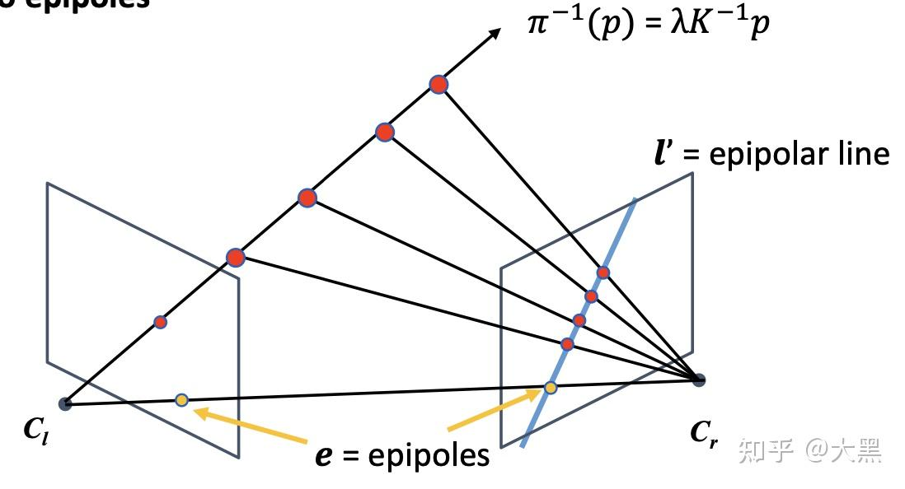
如图所示，两个相机之间的相对位姿，为我们提供了一个很好的先验知识：
已知相机位姿的情况下，从左边相机中发出的指向某个特征点的射线在右边相机中的投影可以计算出来，所以直接在这条投影线上搜索特征点即可。
- 这个约束叫做对极约束（epipolar constraint）
- cl，cr，p 组成的平面成为极平面 (epipolar plane)
- 极平面与两个图像的交线成为极线 (epipolar line)
- 所有的极线的交点我们成为极点（epipole），也是baseline和像平面的交点
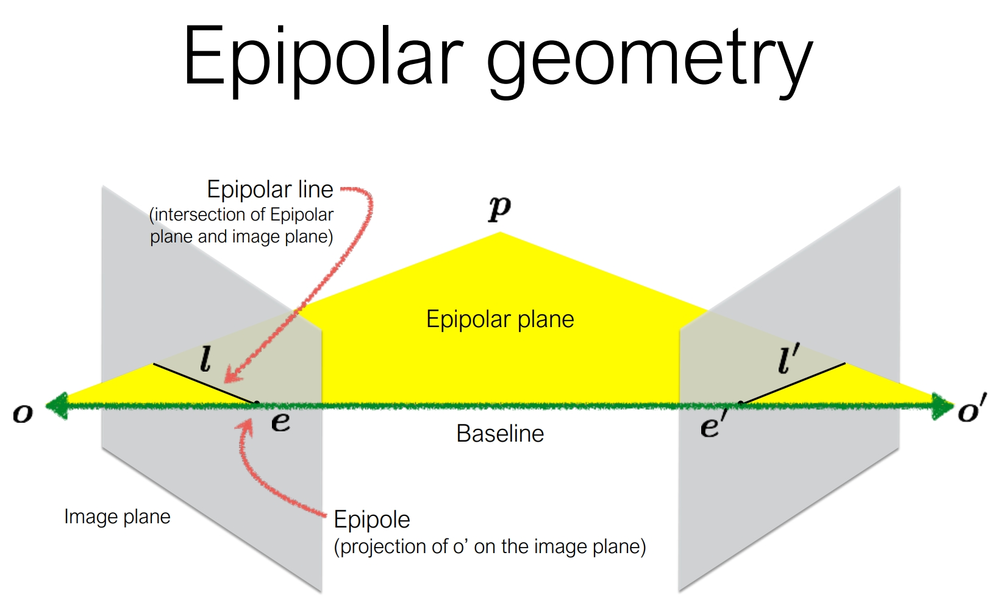
通过这个方法，我们就可以将二维搜索问题降低到一维。
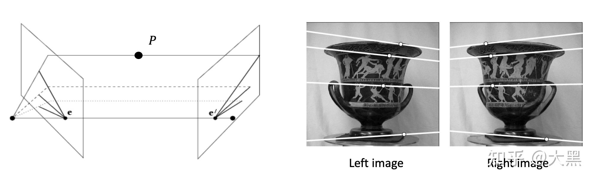
对极约束
具体来说，以左侧相机坐标系为世界坐标系，右侧相机的外参为[R∣t]，设待定位的点在世界坐标系下的坐标为X=[X,Y,Z]T、其在左右相机坐标系下z轴的坐标分别为z1和z2，于是根据相机参数与坐标系变换中的建模可以知道该点在左右相机所拍摄图像上的位置：
xx′=K1X=K2(RX+t)
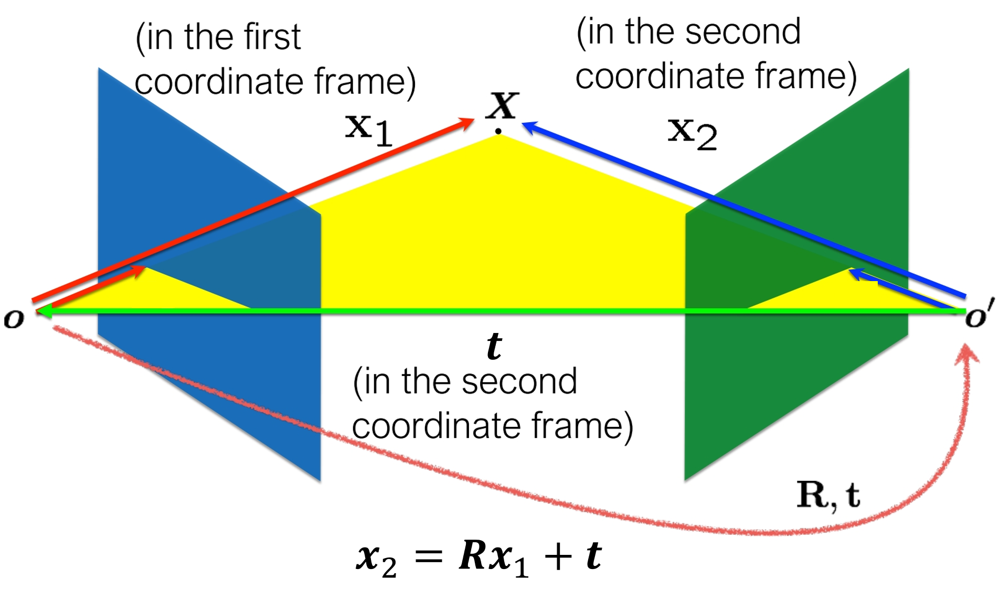
去掉相机内参，还原出对应点在左右两侧相机坐标系下的坐标x1,x2：
x1=K1−1xx2=K2−1x′=X=RX+t
那么右侧相机的x2就可从左侧相机的x1经过变换得到：
x2=Rx1+t
根据相机参数与坐标系变换中的建模，这里的Rx1也可以看作是在右侧相机眼中的向量x1（图中向量OX），而t就是右侧相机相对于左侧相机的位置向量O′O，所以x2=Rx1+t也就可以理解为上图的向量求和。
那么很显然，t、Rx1、x2三向量共面。
接下来回忆两个关于向量的知识：
- 向量叉积a×b是求向量a,b所成平面的法向量
- 相互垂直的向量点积为0
于是，对于三个共面向量，其任意两个向量的叉积与第三个向量的点积为0。这里就取t和Rx1叉积与x2的点积：
(t×Rx1)⋅x2=0
根据a⋅b=aTb=bTa写成矩阵形式，再将叉乘等价于用反对称矩阵来点乘，从而把括号里面的x1拿出来：
x2T(t×R)x1=0t×=⎣⎢⎡0t3−t2−t30t1t2−t10⎦⎥⎤
此即对极约束方程。或重新带入x,x′：
x′T(K2−1)T(t×R)K1−1x=0
即是对极约束方程的另一种形式。
本质矩阵 essential matrix
矩阵论中存在一种Longuet-Higgins方程：
x′TEx=0
其中的E称为“本质矩阵”（Essential Matrix）。在上述对极约束方程中，本质矩阵为E=t×R或E=(K2−1)T(t×R)K1−1。其性质可以表示为：
{xTll=0=ETx′{x′Tl′l′=0=Ex
进一步解析可见对极约束方程的物理含义，以E=t×R为例，此时的：x,x′是目标点在相机坐标系下的坐标：
x1=K1−1xx2=K2−1x′=X=RX+t
其关系如图所示：
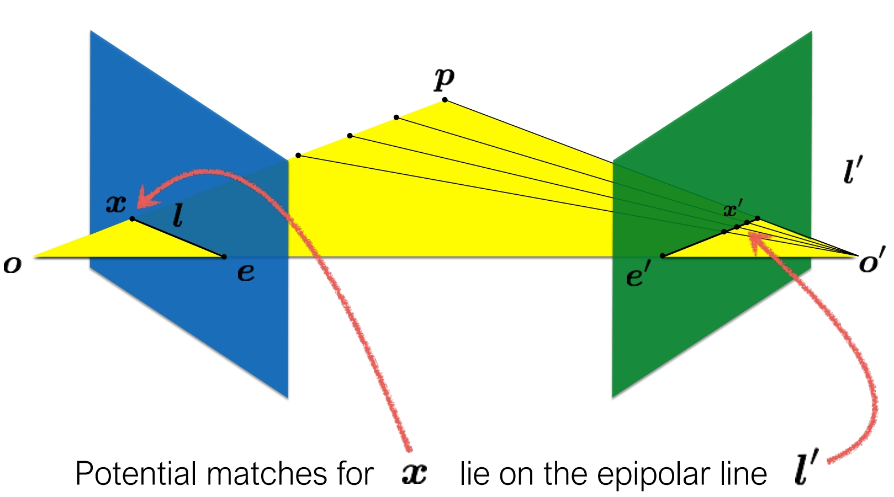
简言之，此处先回忆本科学的解析几何知识：“空间中的点x=[x,y,z]T位于平面l=[a,b,c]T上”等价于ax+by+cz=0，即xTl=0。所以在像平面不确定的情况下，l=[a,b,c]T实际上描述了极平面位置，而显然像平面方程为“z=常数”的形式，其与极平面相交即为极线ax+by=常数。
所以，有了l=[a,b,c]T，对任意给定的像平面都能求出要找的极线。
基础矩阵 fundamental matrix
虽然E=t×R和E=(K2−1)T(t×R)K1−1都是本质矩阵，但E=(K2−1)T(t×R)K1−1通常叫做基础矩阵(fundamental matrix)，记为F。
求基础矩阵：八点算法 8-point algorithm
求解基础矩阵F=(K2−1)T(t×R)K1−1即是在求左右两相机的相对位姿和各自的内参。
写下基础矩阵的Longuet-Higgins方程：
x′TFx=0
共9个变量要解：
[x′,y′,z′]⎣⎢⎡f1f4f7f2f5f8f3f6f9⎦⎥⎤⎣⎢⎡xyz⎦⎥⎤=0
展开：
x′xf1+x′yf2+x′zf3+y′xf4+y′yf5+y′zf6+z′xf7+z′yf8+z′zf9=0
每一对点就有一个方程，所以共需要9对点吗？并不，基础矩阵内部存在内在联系，实际上只需要8对点。
矩阵自由度分析：
- 本质矩阵E=t×R
- 3x3矩阵，9个变量，自由度9？
- 6个独立参数，自由度6？（t有3个独立参数、R是描述三维旋转的矩阵，有3个自由度）
- 尺度等价，自由度-1，自由度5？
- 自由度5！
- 基础矩阵F=(K2−1)T(t×R)K1−1
- 3x3矩阵，9个变量，自由度9？
- 13个独立参数，自由度9？（自由度5的本质矩阵、K1,K2各有4个独立参数）
- 尺度等价，自由度-1，自由度8？
- 自由度8！
于是8对点解基础矩阵：
⎣⎢⎢⎢⎢⎢⎢⎢⎢⎢⎢⎢⎡x1′x1x2′x2x3′x3x4′x4x5′x5x6′x6x7′x7x8′x8x1′y1x2′y2x3′y3x4′y4x5′y5x6′y6x7′y7x8′y8x1′z1x2′z2x3′z3x4′z4x5′z5x6′z6x7′z7x8′z8y1′x1y2′x2y3′x3y4′x4y5′x5y6′x6y7′x7y8′x8y1′y1y2′y2y3′y3y4′y4y5′y5y6′y6y7′y7y8′y8y1′z1y2′z2y3′z3y4′z4y5′z5y6′z6y7′z7y8′z8z1′x1z2′x2z3′x3z4′x4z5′x5z6′x6z7′x7z8′x8z1′y1z2′y2z3′y3z4′y4z5′y5z6′y6z7′y7z8′y8z1′z1z2′z2z3′z3z4′z4z5′z5z6′z6z7′z7z8′z8⎦⎥⎥⎥⎥⎥⎥⎥⎥⎥⎥⎥⎤⎣⎢⎢⎢⎢⎢⎢⎢⎢⎢⎢⎢⎢⎢⎡f1f2f3f4f5f6f7f8f9⎦⎥⎥⎥⎥⎥⎥⎥⎥⎥⎥⎥⎥⎥⎤=0
这八个方程构成了一个线性方程组。它的系数矩阵A由特征点位置构成，大小为 8 × 9，解之即得基础矩阵F。由于测量误差的存在，还是应用SVD求解。根据SVD求最优解的方法，直接取ATA的最小特征值对应的特征向量即得F。
还没结束：F的秩
但是，如果看了下面一节就知道，对于左图上任意一点x，在右图上对应的极线l′=Fx都经过同一点，所以F秩为2（为什么？）。然而系数矩阵是有误差的，求出来的F不一定秩为2。因此，对于求出的F还需要进一步操作让它秩为2，即求一个和F最接近的F^，使F^秩为2。
这个操作同样也可以用SVD实现，还记得介绍SVD时讲的它和PCA的关系么？Σ矩阵中所描述的值实际上相当于成分占比，其对应的特征矩阵就是成分。所以，用SVD实现令F^秩为2且和F接近的方法就是删除F中的最小一个成分：
- 先对F进行SVD，F=UΣVT
- 将Σ中最后一个值置0，得Σ^
- F^=UΣ^VT
这样得到的F^就和F很接近，且秩为2。
还没结束：Normalization
通常，求SVD时要先把坐标缩放到[−1,1]，但是为什么要Normalization？原因是为了稳定性：
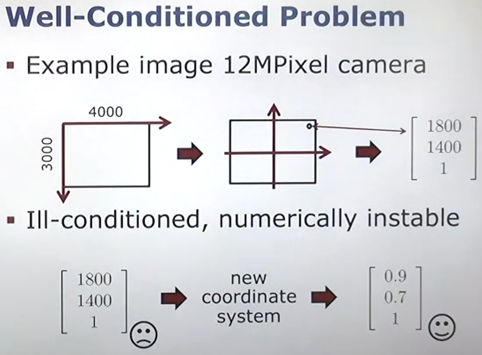
若设缩放坐标用的变换是T，变换后坐标x^=Tx和x^′=T′x′，那么求出来的F^就是：
x^′TF^x^(x′TT′T)F^(Tx)x′T(T′TF^T)x=0=0=0
所以真正的F=TTF^T。
还没结束：已知基础矩阵和相机内参求本质矩阵和相机外参
求本质矩阵简单：E=K2TFK1
求外参就得分解本质矩阵：E=t×R
由于R
实例：已知基础矩阵和左图特征点位置求右图特征点搜索空间
就是求右图极线
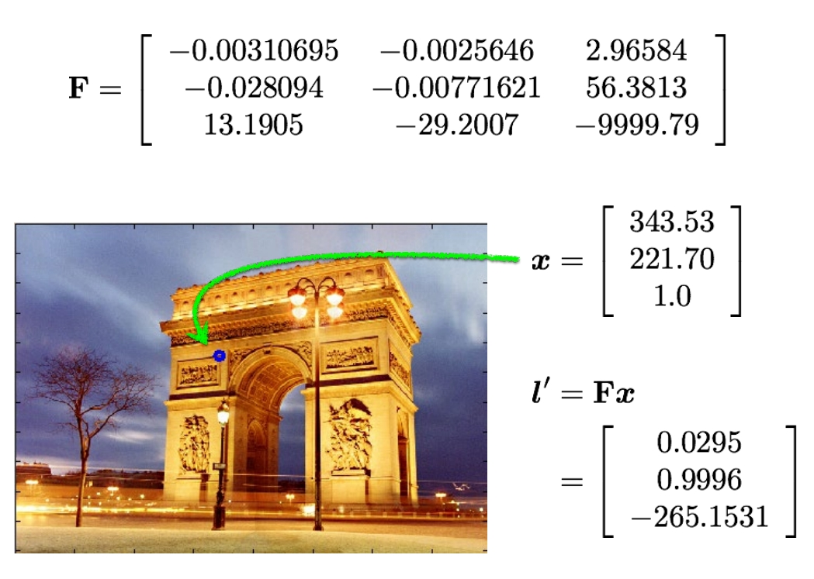
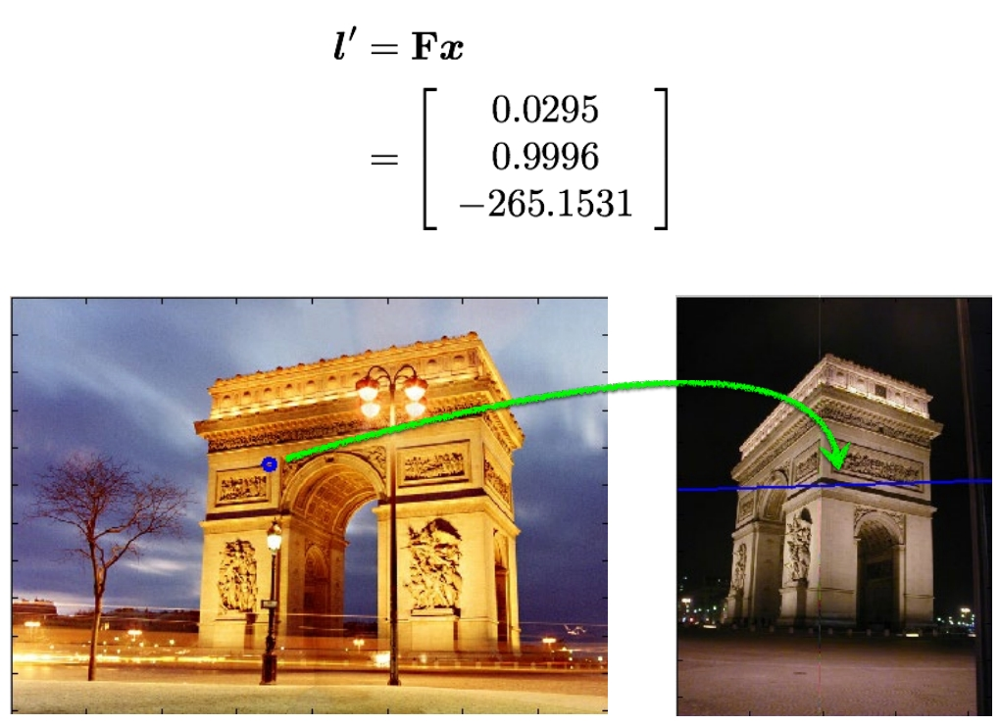
实例：已知基础矩阵求极点位置
设左相机的极点坐标为e，而极点物理含义是左右相机中心连线OO′与相机成像平面的交点，其显然在极线上，且其相当于右侧相机（即坐标原点）在左侧成像平面上的位置：
首先求右侧相机在左侧相机坐标系下的位置，用R和t列个方程，xo′表示右侧相机在左侧坐标系下的坐标，以xo′′表示右侧相机在右侧坐标系下的坐标（即[0,0,0]T），则可以列如下方程：
xo′′=[0,0,0]T=Rxo′+t
为了产生F先两边叉乘t：
0=t×Rxo′
于是得到一个关于xo′的方程：
Exo′=0
而e,e′是在成像平面上的点，所以还要加个内参e=K1xo′和e′=K2xo′于是可以写出方程并硬凑出来一个F，且这里e′依然是原点，不管怎么变都是0：
K2−1e′t×K2−1e′(K2−1)Tt×K2−1e′0=Fe=RK1−1e+t=t×RK1−1e=(K2−1)Tt×RK1−1e
即得方程Fe=0，SVD解之即得e。
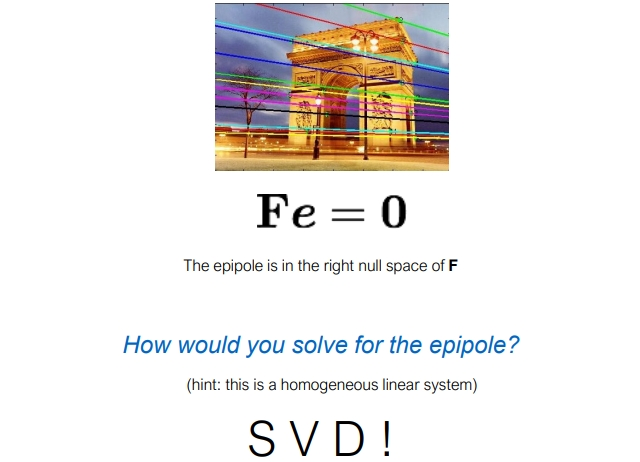
单应矩阵 Homography
除了基本矩阵和本质矩阵，我们还有一种称为单应矩阵H的东西，它描述了两个平面之间的映射关系。若场景中的特征点都落在同一平面上（比如墙，地面等），则可以通过单应性来进行运动估计。这种情况在无人机携带的俯视相机，或扫地机携带的顶视相机中比较常见。
单应矩阵通常描述处于共同平面上的一些点，在两张图像之间的变换关系。
设左右相机成像平面的特征点对x1,x2所对应的点在世界坐标系下的坐标为X=[X,Y,Z]，其在某平面上，该平面方程为：
nTX+d=0
整理一下：
dnTX=1
x2=K2(RX+t)=K2(RX+t⋅(−dnTX))=K2(R−dtnT)X=HK2(R−dtnT)K1−1x1.
单应矩阵即H=K2(R−dtnT)K1−1。
这个矩阵可以将平面nTX+d=0上的任一点X在左侧相机成像平面上的坐标x1转化为右侧相机成像平面上的坐标x2：
x2=Hx1
不同于本质矩阵和基础矩阵将点转换为线，单应矩阵将点转化为点，因此得名。
矩阵自由度分析：
- 单应矩阵H=K2(R−dtnT)K1−1
- 3x3矩阵，9个变量，自由度9？
- 14个独立参数，自由度9？（t有3个独立参数、R是描述三维旋转的矩阵，有3个自由度、K1,K2各有4个独立参数）
- 尺度等价，自由度-1，自由度8？
- 自由度8！
双目矫正 stereo rectification
根据上面三角测量和对极几何的知识，我们可以看到，完全平行的双目相机计算是很有优势的。
其极线全都是相同位置的水平直线，在三角测量的时候也不再需要求解SVD之类的麻烦东西了。
所以我们就希望想方法，将拍到的图像投影到一个这样理想的双目相机模型中，这个过程就叫做双目矫正。
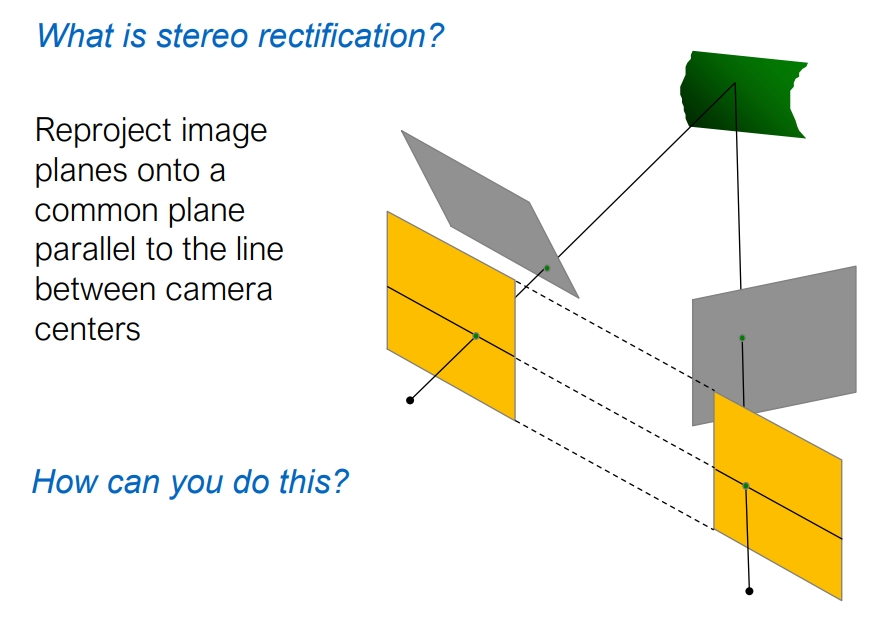
双目矫正之后极线全都是相同位置的水平直线，不用每次都解SVD找极线：
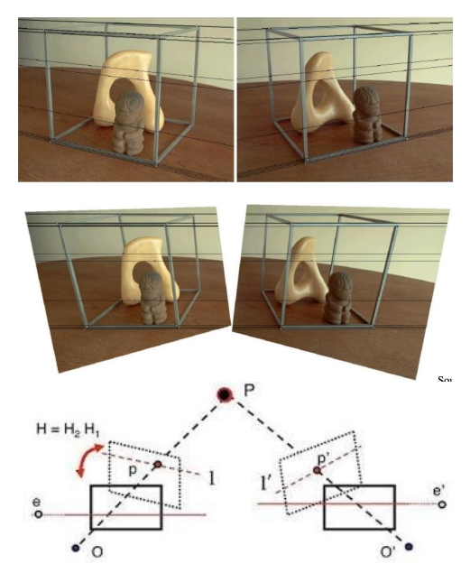
问：从其他视角矫正来的图和在矫正后的视角拍摄的图是等价的吗？
- 如果的把相机转到矫正后的视角，拍摄出来的图和从其他视角矫正来的图一样吗？
- 视角矫正的相机位姿变化+场景中物体的遮挡⇒矫正来的图=从矫正后的视角出发拍摄的图？
答：等价。
- 以小孔成像作为相机模型，这里的矫正实际上是在矫正小孔后面的成像平面的位姿。
- 在已知小孔后成像平面位姿的情况下，由图片可以推知打到小孔的每一束光线的方向，进而可以推出任意位姿成像平面上的图片。
- 只要这个小孔位置不变，其成像中的物体的遮挡关系就不会改变，拍出来的图片也就可以相互转化。
- 两点成一条直线，所以双目相机总能找到一个和两个相机小孔连线平行的成像平面。
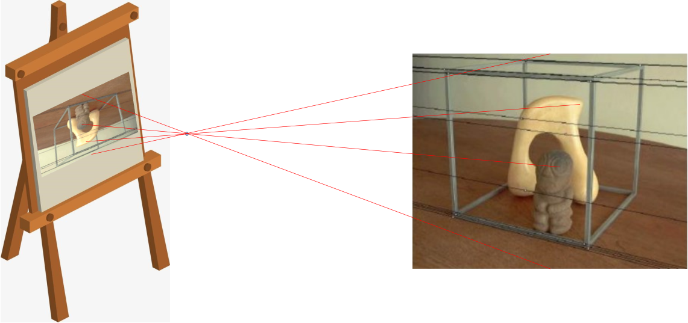 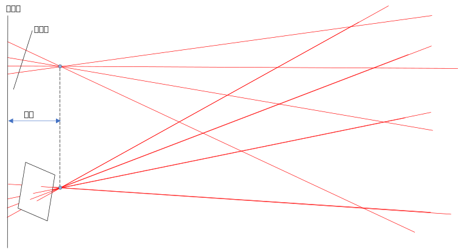
双目矫正公式推导
双目矫正的所谓“将拍到的图像投影到理想双目相机模型”的过程从根本上讲就是找一个从拍摄的图像坐标[u,v,w]T到对应的理想双目相机模型图像坐标[u^,v^,w^]T的变换。设场景中的点在世界坐标系下坐标表示为X=[X,Y,Z]T，其在左侧和右侧相机成像平面上的坐标分别表示为xl=[ul,vl,wl]T和xr=[ur,vr,wr]T，而左右侧相机内参分别为Kl和Kr，外参分别为[Rl∣tl]和[Rr∣tr]，于是先来一手相机参数与坐标系变换：
xlxr=Kl(RlX+tl)=Kr(RrX+tr)
要求将左侧和右侧相机照出来的点映射到共面的成像平面上，即映射后的相机具有相同的旋转矩阵R^（方向相同）且具有相同的内参K^。
再回忆相机参数与坐标系变换中所介绍的c2w变换矩阵[R∣t]中平移向量t的含义：世界坐标系原点在相机坐标系下的位置。所以当旋转矩阵发生变化时，平移向量的值也会发生变化，设为t^l,t^r：
xl^xr^=K^(R^X+t^l)=K^(R^X+t^r)
为了求xl^,xr^和xl,xr间的关系，得先把X消掉，所以先这样：
XX=Rl−1Kl−1xl−Rl−1tl=Rr−1Kr−1xr−Rr−1tr
XX=R^−1K^−1x^l−R^−1t^l=R^−1K^−1x^r−R^−1t^r
换一个角度理解，上面4个式子其实是在利用c2w矩阵将相机坐标系下的坐标向世界坐标系转化，其中的Kl−1xl,Kr−1xr分别表示点X在左右相机坐标系下的坐标，同理，K^−1x^l,K^−1x^r分别表示点X在矫正后的左右相机坐标系下的坐标。
此外，由于tl表示“世界坐标系原点相在相机坐标系下的位置”，而Rl−1是相机坐标系到世界坐标系的旋转，所以−Rl−1tl正是“相机坐标系原点在世界坐标系下的位置”，−Rr−1tr、−R^−1t^l、−R^−1t^r均同理。
而由于双目矫正中相机位置不变，于是必有Rl−1tl=R^−1t^l和Rr−1tr=R^−1t^r。
于是将c2w矩阵记为：
[wRl∣cl][wRr∣cr][wR^∣cl][wR^∣cr]=[Rl−1∣−Rl−1tl]=[Rr−1∣−Rr−1tr]=[R^−1∣−R^−1t^l]=[R^−1∣−R^−1t^r]
再设点X在矫正后的左右相机坐标系下的坐标：
cxlcxrcx^lcx^r=Kl−1xl=Kr−1xr=K^−1x^l=K^−1x^r
那么上式可以简写为X=Rx+t的形式：
XX=wRl⋅cxl+cl=wRr⋅cxr+cr
XX=wR^⋅cx^l+cl=wR^⋅cx^r+cr
于是：
wR^⋅cx^lwR^⋅cx^r=X−cl=X−cr=wRl⋅cxl=wRr⋅cxr
再带入xl,xr,xl^,xr^：
R^−1K^−1x^lR^−1K^−1x^r=Rl−1Kl−1xl=Rr−1Kr−1xr
即得：
x^lx^r=K^R^Rl−1Kl−1xl=K^R^Rr−1Kr−1xr
这样，如果给定两个双目矫正矩阵K^R^Rl−1Kl−1和K^R^Rr−1Kr−1，就可将左右相机照片上的点映射到矫正成像平面上，从而实现双目矫正操作。
接下来就是要求解这两个双目矫矩阵。
双目矫正矩阵求解
显然，双目矫正过程中相机位置并不发生改变，而共面不光需要相机方向相同，其方向还必须使得两个成像平面重合。
如图所示，显然，与两相机位置连线平行的平面都可以作为成像平面，所以成像平面有无穷多个。
若设左右侧相机在世界坐标系下的坐标分别为cl和cr，通常直接取下列方程对应的成像平面：
K^wR^r^1r^2r^3=2Kl+Kr=[r^1,r^2,r^3]=∥cl−cr∥cl−cr=r3×r^1=r^1×r^2
其中r3是左边相机的w2c旋转矩阵wRl中的第三列列向量。
回忆相机参数与坐标系变换中对旋转矩阵本质的介绍，旋转矩阵的列向量为xyz坐标轴单位向量在原坐标系中的向量值，可以理解上面这个成像平面为什么能满足要求：
- r^1=∥cl−cr∥cl−cr表示相机坐标系的x轴的方向为左右两相机位置相减再归一化，即保证矫正后的两相机成像平面与相机位置的连线平行
- r^2=r3×r^1让相机坐标系的y轴的方向与左侧相机的z轴（相机朝向）垂直，也可以看成是与其y轴平行
- 因为是旋转矩阵，三个列向量必须正交，所以xy轴确定后z就唯一确定r^3=r^1×r^2
这个过程相当于是将左侧相机中的坐标系沿y轴旋转到x轴与两相机位置的连线平行，如上图所示，很明显满足双目矫正的要求。
有了wR^就能知道R^=wR^−1，和K^一起带入双目矫正矩阵K^R^Rl−1Kl−1和K^R^Rr−1Kr−1，就可将左右相机照片上的点映射到矫正成像平面上，从而实现双目矫正操作。